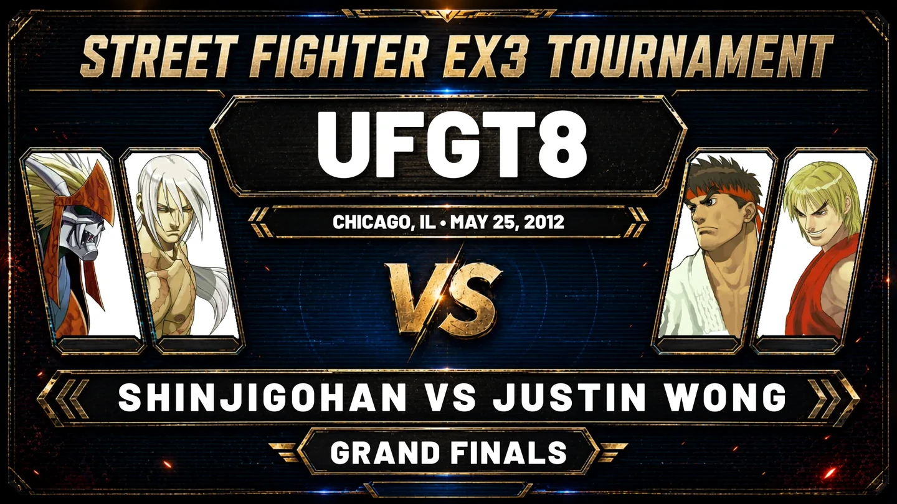

▶
▶
PICKED: EX3
STREET FIGHTER
EX3
The rare PS2 chapter of Street Fighter EX. Watch historic tournament footage, hard-to-find sets and community-preserved matches, then find your route into playing online.
PLAYSTATION 2ONLINE VIA PCSX26 ARCHIVE VIDEOS
01 • PLAY ONLINE
PLAY EX3 ONLINE.
EX3 uses a different route from the PlayStation games. SFEXOnline currently documents PCSX2 and is gathering the clearest verified EX3-specific setup information.
SEE THE EX3 ONLINE ROUTE →
CURRENT METHOD
PCSX2
PLAYSTATION 2 • CURRENT ROUTE
02 • EX3 MATCHES
THE RARE PS2 CHAPTER.
EX3 footage is harder to come across, which makes every surviving set more valuable. This hub brings together tournament history, older competitive footage and community uploads so the game is easier to find and explore.

ARCHIVE HISTORYShinjiGohan vs Justin Wong
A Grand Finals set from UFGT8 that shows Street Fighter EX3 competitive history reaching back long before SFEXOnline existed.
FROM THE ARCHIVE
KEEP DIGGING.
SFEXOnline uploads and community-preserved footage together, with original sources kept visible.
▶
 ▶COMMUNITY
▶COMMUNITY
COMMUNITY SOURCE
EX3 Versus Matches | 16/12/2022
A multi-match set featuring ACStriker and Atomic Commander across several teams.
WATCH ORIGINAL ↗ ▶COMMUNITY
▶COMMUNITY
COMMUNITY SOURCE
EX3 Community Match Upload
More EX3 footage preserved through the wider community archive.
WATCH ORIGINAL ↗ ▶COMMUNITY
▶COMMUNITY
COMMUNITY SOURCE
TheDarkAce vs Kyiel Reese (Part 1)
A community-preserved EX3 set from the KEEPING IT FIGHTIN archive.
WATCH ORIGINAL ↗